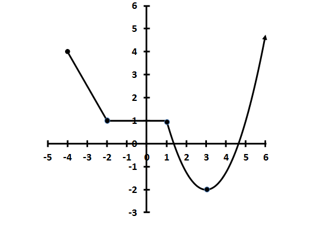
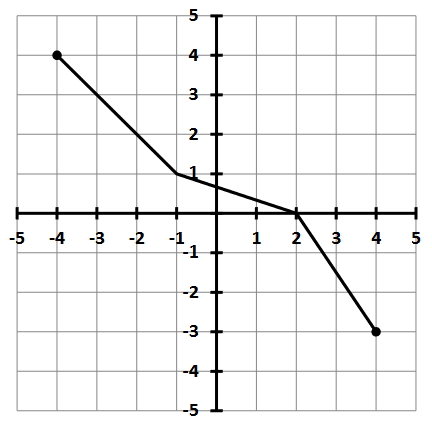
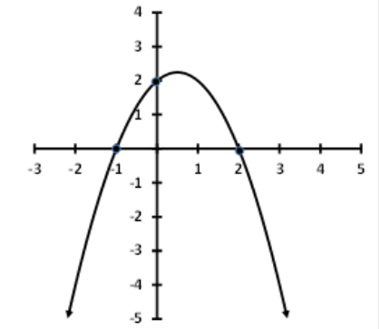

How to use this page
Try each problem first, then expand Hint or Solution as needed. (this is a draft. Currently in the process of checking and reviewing the solutions are correct. I hope It Helps you in your study.)
Formulas Provided on the Exam {: #formula-sheet }
Quadratics
| Quadratic Formula | Vertex of Parabola |
|---|---|
| \(x = \dfrac{-b \pm \sqrt{b^{2}-4ac}}{2a}\) | \(x = -\dfrac{b}{2a}\) |
Factored Forms
| Form |
|---|
| \(y = a(x-p)(x-q)\) |
| \(y = a(x-h)^2 + k\) |
| \(y = a(x-r_1)(x-r_2)\) |
Exponentials & Logs
| Exponential Growth / Decay | Logs Conversion |
|---|---|
| \(A = P\!\bigl(1+\tfrac{r}{n}\bigr)^{nt}\) | \(\log_b x = \dfrac{\ln x}{\ln b}\) |
| \(A = P e^{rt}\) |
Compound Interest
| Continuous Compounding |
|---|
| \(A = P e^{rt}\) |
Problems
1 Sales‑Tax Expression
In a certain city, sales tax is 9 %. Write an expression for the total cost of an item priced \(x\) dollars after tax is added.
A. \(C(x)=1.09x\)
B. \(C(x)=0.09x\)
C. \(C(x)=1.9x\)
D. \(C(x)=9x\)
E. \(C(x)=0.91x\)
Hint
Add 9 % of the price to the price to the total cost.Solution
9 % of \(x\) is \( \frac{9}{100}x = 0.09x\); total cost \(C(x) = x+0.09x = 1.09x\). Answer A.2 Which Graph is a Function?

Hint
Use the vertical line test.Solution
Graph A passes the vertical‑line test, so only Graph A is a function.3 Domain of \(R(x)=\sqrt{2-5x}\)
A. \([0.4,\infty)\)
B. \((-\infty,0.4]\)
C. \((0.4,\infty)\)
D. \((-\infty,0.4)\)
E. \([0,\infty)\)
Hint
input of a Square roots cannot be negative.Solution
The inside of the squarer root cannot admit negative values. So we require $$2-5x \geq 0.$$ solve for x. $$\begin{align*} 2 & \geq 5x \\ \frac{2}{5} &\geq x \end{align*}$$ Hence the domain of \( x \) must be \( (-\infty, \frac{2}{5}) \). Which can be written as \( (-\infty,0.4] \). Answer B.4 Intervals of Increase

A. \((-\infty,3)\)
B. \((-\infty,0)\)
C. \((0,3)\)
D. \([3,\infty)\)
E. \((0,3)\cup(3,\infty)\)
Solution
From the sketch the function rises for all \(x \geq 3 \) so the answer is \( [3, \infty) \).5 Starbucks — Slope & Interpretation
| Year | Locations |
|---|---|
| 2012 | 18 066 |
| 2014 | 21 366 |
| 2015 | 23 016 |
What is the slope of the line that passes through these points, and what does it mean in practical terms?
A. \(m = 3300\). The number of Starbucks locations worldwide increases by 3300 per year.
B. \(m = 3300\). The number of locations increases by 3300 over 3 years.
C. \(m = 4950\). The number of locations increases by 4950 per year.
D. \(m = 1650\). The number of locations increases by 1650 over 3 years.
E. \(m = 1650\). The number of locations worldwide increases by 1650 per year.
Solution
Slope
Thus Starbucks was adding about 1650 locations each year over the period shown.
Answer E.
6 Linear Model for Starbucks Locations
Which linear function best models the number of Starbucks locations \(S(t)\) as a function of time \(t\) in years since 2012?
A. \(S(t)=1650t+18\,066\)
B. \(S(t)=3300t+18\,066\)
C. \(S(t)=4950t+18\,066\)
D. \(S(t)=1650t+21\,366\)
E. \(S(t)=3300t+21\,366\)
Solution – TODO
at \(t=0\) (2012), \(S(0)=18\,066\). Slope \(m=1650\) locations per year. \[ S(t)=1650t+18\,066\] So the answer is \(S(t)=1650t+18\,066\). Answer A.7 Evaluate the Piecewise Function
\[ f(x)= \begin{cases} 2x+5 & x<-2\\[2pt] x-1 & -2\le x\le1\\[2pt] \tfrac13x+4 & x>1 \end{cases} \]Evaluate \(f(-3)\).
A. 3 B. –1 C. –4 D. 1 E. undefined
Hint
In which branch does \( x= -3 \) fall? Use corresponding formula to compute \(f(-3)\).Solution
Since \(-3<-2\), use the first branch: \[ f(-3)=2(-3)+5=1.\] So the answer is \(f(-3)=1\). Answer D.8 (*) Transformations of \(g(x)\)
If \((2,5)\) lies on \(y=g(x)\), which point must lie on
\(y=\tfrac15\), \(2g\!\bigl(\tfrac{1}{5}X\bigr)+3\)?
A. \(\bigl(\tfrac25,13\bigr)\)
B. \((4,4)\)
C. \((10,13)\)
D. \(\bigl(\tfrac{11}{10},2\bigr)\)
E. \((4,13)\)
Hint
Identify input and output of the function and the transformations.
Solution
1. To send the old input \(2\) through \(x/5\), set \(\frac{x}{5}=2\) ⇒ \(x=10\). 2. The original output is \(g(2)=5\). Then \[ y = 2\cdot5 + 3 = 13. \] Hence the image is \[ \boxed{(10,13)}. \]9 Fuel‑Efficiency Scaling
\(d=f(x)\) gives distance (mi) for \(x\) gallons of gas. Point \((10,250)\) is on the graph.
In five years the same car travels twice as far per gallon. Which point lies on the new graph?
A. \((20,250)\)
B. \((20,500)\)
C. \((10,125)\)
D. \((10,500)\)
E. \((20,125)\)
Hint
Identify input and output of the function. Which point is scaled by a factor of 2?Hint
Originally \(10\) gal ⇒ \(250\) mi. Doubling fuel efficiency means the same \(10\) gal ⇒ \(2\times250=500\) mi. \[ \boxed{(10,500)}. \]10. (***) Composition of Rational Functions
Consider the functions
\[ f(x) = \frac{x - 1}{x} \qquad\text{and}\qquad g(x) = \frac{x - 2}{x + 5}. \]Find \((f\circ g)(x)\).
A. \(\displaystyle (f\circ g)(x) = -\frac{7}{x^{2} + 5x}\)
B. \(\displaystyle (f\circ g)(x) = \frac{x^{2} - 3x + 2}{x^{2} + 5x}\)
C. \(\displaystyle (f\circ g)(x) = -\frac{x - 1}{6x - 1}\)
D. \(\displaystyle (f\circ g)(x) = -\frac{x - 1}{x^{2} + 5x}\)
E. \(\displaystyle (f\circ g)(x) = -\frac{7}{x - 2}\)
Hint
Identify the inner and outer functions: \[ (f\circ g)(x) = f\bigl(g(x)\bigr). \] First compute \(g(x)\), then substitute that result into \(f\).Hint
Identify the inner and outer functions: \[ (f\circ g)(x) = f\bigl(g(x)\bigr). \] First compute \(g(x)\), then substitute into \(f\).Solution
\[ (f\circ g)(x) = \frac{g(x)-1}{g(x)} \quad\text{with}\quad g(x)=\frac{x-2}{x+5}. \] \[ \begin{aligned} \frac{g(x)-1}{g(x)} &= \frac{\dfrac{x-2}{x+5}-1} {\dfrac{x-2}{x+5}}\\ &= \frac{\dfrac{x-2}{\cancel{x+5}} - \dfrac{x+5}{\cancel{x+5}}} {\dfrac{x-2}{\cancel{x+5}}}\\ &= \frac{x-2-(x+5)}{x-2}\\ &= \frac{-7}{x-2} \end{aligned} \]11 (*) Coupon Order Matters
Kohl’s allows customers to use both a “$10 off” coupon and a “30 % off” coupon on the same transaction, but the store stipulates that the “dollar off” coupon must be used first.
Define
Which of the following functions represents the final price after applying first the \(\$10\)‑off coupon and then the 30 %‑off coupon?
A. \((g\circ f)(x)\)
B. \((f\circ g)(x)\)
C. \((f\cdot g)(x)\)
D. \((f+g)(x)\)
E. \((g-f)(x)\)
Hint
Since the \(\$10\)‑off must be applied first, feed the original price \(x\) into \(f\), then take that result and feed it into \(g\).Solution
We want to subtract \(\$10\), then take 70 % of the remainder. That is \[ (g\circ f)(x) = g\bigl(f(x)\bigr) = 0.70\bigl(x - 10\bigr). \] None of the other orders or operations matches this. Hence the correct answer is **A. \((g\circ f)(x)\)**.12 (*) Inverse Function
Find \(f^{-1}(x)\) for \(f(x)=\dfrac{x-1}{2x+3}\).
A. \(f^{-1}(x) = \dfrac{2x+3}{x-1}\)
B. \(f^{-1}(x) = \dfrac{-3x-1}{2x-1}\)
C. \(f^{-1}(x) = \dfrac{x+4}{2x+3}\)
D. \(f^{-1}(x) = \dfrac{-x+1}{x+2}\)
E. None of these
Hint
solve for x.Solution
solve for x. \[ y = \dfrac{x-1}{2x+3} \implies y(2x+3) = x-1 \implies 2xy + 3y = x - 1\] Put all \(x\) terms on one the same side and factor out \(x\): \[ x - 2xy = 3y + 1 \implies x(1-2y) = 3y + 1 \implies x = \dfrac{3y+1}{1-2y} \] Now switch \(x\) and \(y\): \[ f^{-1}(x) = \dfrac{3x+1}{1-2x}\] So the answer is \(f^{-1}(x) = \dfrac{3x+1}{1-2x}\). Answer B.13 (*) Evaluate \(f^{-1}(2)\) from a Graph

A. 0 B. 2 C. –2 D. Undefined E. None of these
Hint
\(g(3) =2\) means when the input is 3, the output is 2. The inverse function \(g^{-1}(2)\) asks: what is the input that gives an output of 2?Solution
The graph shows that \(g(-2)=2\), so the inverse function \(g^{-1}(2)=-2\). Thus the answer is B.14 Find a Quadratic from a Graph

A. \(y=(x+1)(x-2)\)
B. \(y=-(x+1)(x-2)\)
C. \(y=(x-2)(x-1)\)
D. \(y=-(x-2)(x-1)\)
E. \(y=-(x+1)(x-2)-\)
Hint
Identify zeros & orientation.Solution
Observe the \(y=0\) when \(x=-1\) or \(x=2\). Thus the factored form is \[ y = A(x+1)(x-2).\] Now we evaluate the formula above at the point (0,2) to find \(A\): \[ 2 = A(0+1)(0-2) \implies 2 = -2A \implies A = -1.\] So the equation is \[ y = -(x+1)(x-2).\] Thus the answer is \(y=-(x+1)(x-2)\). Answer B.15 Time for Projectile to Land
A stone’s height (m) after \(t\) s:
\(h(t)=-4.9t^{2}+49t+277.4\). When does it hit the ground?
A. < 9 s
B. 9–11 s
C. 11–13 s
D. 13–15 s
E. > 15 s
Hint
Solve h(t) = 0. Use quadratic formula.Solution: Calculator version
There are two ways to solve this problem with the claculator.
Version 1: program > quad > “asks you for a? b? c? > gives you the roots.
Version 2:
-
Press
Y= -
Enter your quadratic, e.g.
Y1 = A·X² + B·X + C -
Press
GRAPH -
Press
2nd→CALC -
Select
2: Zero -
Left Bound? Move the cursor to just left of the root and press
ENTER -
Right Bound? Move the cursor to just right of the root and press
ENTER -
Guess? Just press
ENTER— the calculator will display the root.
Solution
Set \(h(t)=0\): \[ 0=-4.9t^{2}+49t+277.4\] Use the quadratic formula: \[ t=\dfrac{-49\pm\sqrt{49^{2}-4(-4.9)(277.4)}}{2(-4.9)}\] \[ t=\dfrac{-49\pm\sqrt{2401+5443.76}}{-9.8}\] \[ t=\dfrac{-49\pm\sqrt{7844.76}}{-9.8}\] \[ t=\dfrac{-49\pm88.6}{-9.8}\] \[ t=\dfrac{-49+88.6}{-9.8}\approx-4.02\text{ (not valid)}\] \[ t=\dfrac{-49-88.6}{-9.8}\approx14.05\text{ (valid)}\] So the stone hits the ground at about \(t=14\) seconds. Thus the answer is D16 (*) Profit Maximization
Demand: \(p(x)=50-\dfrac{1}{4000}x\). Fixed cost $25 000; variable $3 per pair.
How many sunglasses maximize profit?
A. 100 000
B. 87 000
C. 94 000
D. 200 000 E. 188 000
Hint.
Combine formulas to obtain an equation for the profit: Revenue = demand x price Profit = Revenue - cost. Obtain a parabola. find vertex.Solution
Revenue: \[ R(x)=p(x)x=(50-\dfrac{1}{4000}x)x=50x-\dfrac{1}{4000}x^{2}\] Cost: \[ C(x)=25000+3x\] Profit: \[ P(x)=R(x)-C(x)=\left(50x-\dfrac{1}{4000}x^{2}\right)-(25000+3x)\] \[ P(x)=-\dfrac{1}{4000}x^{2}+47x-25000\] This is a downward-opening parabola. The maximum occurs at the vertex: \[ x=-\dfrac{b}{2a}=-\dfrac{47}{2(-\dfrac{1}{4000})}=47\cdot2000=94000.\] Thus the maximum profit occurs at \(x=94\,000\) pairs. So the answer is C.17 Facebook Users Model
The number of monthly active Facebook users worldwide (in millions) between 2009 and 2017 is modeled by
where \(t\) is years since 2009. Use this model to answer the next question.
17. Evaluate \(f(1)\) and give a practical interpretation.
A. \(f(1)=456.57\). In the year 2010, there were an average of 456.57 Facebook users added each month.
B. \(f(1)=456.57\). In the year 2010, there were 456.57 monthly Facebook users.
C. \(f(1)=456.57\). In the year 2010, there were 456.57 million monthly Facebook users.
D. \(f(1)=456.57\). In the year 2010, there were an average of 456.57 million Facebook users added each month.
E. \(f(1)=456.57\). To reach 1 million monthly Facebook users, it took 456.57 months.
Hint
Substitute \(t=1\) into the model. Remember that \(f(t)\) is in **millions** of users.Solution
\[ f(1) =2.12(1)^3 -27.43(1)^2 +301.48(1) +180.4 =456.57. \] Since \(f\) measures millions of users, \(456.57\) means **456.57 million monthly active users** in 2010. **Answer C.**18 (***) When Did Users Reach 1 Billion?
According to this model, in what year did the number of monthly active Facebook users reach 1 000 million?
A. 2011 B. 2012 C. 2013 D. 2014 E. 2015
Hint
Solve \(f(t)=1000\) (millions) for \(t\), then add that to 2009. or alternative use calculator and intersect f(t) with y=1000.Solution
Use calculator. We obtain19 Factor \(R(x)\) Given a Root
Graph
on your calculator. Given that \((x-1)\) is a factor, what are the other linear factors?
A. \((2x+3)\) and \((x+2)\)
B. \((2x-3)\) and \((x-2)\)
C. \((3x+1)\) and \((x-3)\)
D. \((3x-1)\) and \((x+3)\)
E. \((2x+1)\) and \((x+6)\)
Hint
Divide \(R(x)\) by \((x-1)\) to obtain a quadratic, try graphing such quadratic to find its roots.Hint
find roots of $$ \frac{2x^3 + 5x^2 - 6x - 1}{x-1}.$$Solution
Graph $$R(x)= \frac{2x^3 + 5x^2 - 6x - 1}{x-1}$$ and find its intersection with $$y=0$$.The roots are \(x=-2\) and \(x=\frac{-3}{2}\). verify your answer: R(x) = (x-1)(2x+3)(x+2)
\[ \text{Verify: } R(-2) = 0 \text{ and } R\left(-\frac{3}{2}\right) = 0 \]20 End Behavior of \( f(t)=\dfrac{6t}{t + 1.2} \)
As \(t\) gets very large, what does \(f(t)\) approach?
A. \(f(t)\to\infty\)
B. \(f(t)\to1.2\)
C. \(f(t)\to3.8\)
D. \(f(t)\to6\)
E. None of these
Hint
Take a look at the leading terms.Solution
The leading terms are \(\(6t\) and \(t\)). so as \(t\to\infty\), \[ \lim_{t\to\infty}\frac{6t}{t+1.2} =\lim_{t\to\infty}\frac{6}{1 + \tfrac{1.2}{t}} =6. \]
Answer D.
21 (***) Evaluate \(h^{-1}(5)\) and Interpret
The height (ft) of a dwarf evergreen tree after \(t\) years is
$$ h(t) = \frac{6t}{1.2 + t}. $$Find \(h^{-1}(5)\), i.e.\ the time \(t\) when the tree reaches 5 ft.
A. \(h^{-1}(5)=4.84\). When a tree is 5 ft tall, 4.84 years have passed.
B. \(h^{-1}(5)=1.2\). When a tree is 5 ft tall, 1.2 years have passed.
C. \(h^{-1}(5)=6\). When a tree is 5 ft tall, 6 years have passed.
D. \(h^{-1}(5)=4.84\). After 5 years, the height is 4.84 ft.
E. \(h^{-1}(5)=6\). After 5 years, the height is 6 ft.
Hint
Solve \(h(t) = 5\).Solution
We want \(t\) such that \[ \frac{6t}{1.2 + t} = 5. \] Multiply both sides by \(1.2+t\), distribute, and isolate \(t\): $$ \begin{aligned} 6t &= 5(1.2 + t) &&\bigl|\times(1.2+t)\\ 6t &= 6 + 5t &&\bigl|\,-5t\\ 6t - 5t &= 6\\ t &= 6. \end{aligned} $$Thus \(h^{-1}(5)=6\), meaning when the tree reaches 5 ft tall, 6 years have passed.
$$ \boxed{6}. $$Choice C.
22 (***) Horizontal Asymptote of \(\displaystyle p(x)=\frac{2-3x}{x+1}\)
A. \(y=-3\)
B. \(y=2\)
C. \(y=\tfrac23\)
D. \(y=\tfrac32\)
E. \(y=-1\)
Hint
For large \(\lvert x\rvert\), compare the leading terms \(-3x\) over \(x\).Solution
As \(x\to\pm\infty\), \(\frac{2-3x}{x+1}\to\frac{-3x}{x}=-3\). **Answer A.**23 Range of \(\displaystyle p(x)= \left( \frac{1}{3} \right)^x +2\)
A. \([2,\infty)\)
B. \((-\infty,2]\)
C. \((-\infty,2)\)
D. \((-\infty,\infty)\)
E. \((2,\infty)\)
Hint
The function \((\tfrac13)^x\) is always positive. What does that tell you about the range of \(p(x)\)? What happens if \(x\) is very large or very small, negative?Solution
Since \((\tfrac13)^x>0\) for all real \(x\), \[ (\tfrac13)^x\in(0,\infty) \quad\Longrightarrow\quad p(x)=(\tfrac13)^x+2\in(2,\infty). \] \[ \boxed{(2,\infty)}. \] **Answer E.**24 (***) Find \(C\) and \(b\) for \(y = C\,b^x\)
| \(x\) | 1 | 2 | 3 | 4 |
|---|---|---|---|---|
| \(y\) | 8 | 12 | 18 | 27 |
A. \(C=3,\;b=2\)
B. \(C=\tfrac{16}{3},\;b=\tfrac23\)
C. \(C=8,\;b=\tfrac23\)
D. \(C=\tfrac{16}{3},\;b=\tfrac32\)
E. \(C=8,\;b=\tfrac32\)
Hint
Evaluate the function at points we know.Solution
First evaluate the function at \(x=1\): \[ y(1)=C b^1\] This gives us the equation \[ 8 = C b.\] We can solve for \(C\): \[ C = \frac{8}{b}.\] Next evaluate the function at \(x=2\): \[ y(2)=C b^2\] This gives us the equation \[ 12 = C b^2.\]Since we know \(C\), we can substitute:
\[ 12 = \left(\frac{8}{b}\right) b^2 \]Cancel the \(b\) in the denominator: So we have
\[ 12 = 8b\]Hence
\[ b = \frac{12}{8} = \frac{3}{2}.\]Now substitute \(b\) back into the equation for \(C\):
\[ C = \frac{8}{b} = \frac{8}{\frac{3}{2}} = \frac{16}{3}.\]
So the answer is D.
25 Continuous Compounding
Arturo wants $15 000 in 6 years with continuous compounding at 3.7 % Continuously compounded. How much must he invest now?
A. $12 061.98
B. $1 629.14
C. $138 109.96
D. $18 728.57
E. $12 013.73
Hint
Use \(A=Pe^{rt}\) with the given data.Solution
We want to solve for \(P\) in the equation \[ A=Pe^{rt}\] with data given \(A=15000\), \(r=\frac{3.7}{100}=0.037\), and \(t=6\): \[ 15000=Pe^{0.037\cdot6}\] \[ P=\frac{15000}{e^{6(0.037)}}\approx\frac{15000}{e^{0.222}}=\frac{15000}{1.248}\approx12013.73.\] So the answer is \(P\approx12013.73\). **Answer E.**26 Population Prediction
A city’s population is \(P(t)=12500e^{0.02t}\), where \(t\) is years after 1985. Predict in 2020.
A. < 10 000
B. 10 000–20 000
C. 20 000–30 000
D. 30 000–40 000
E. > 40 000
Hint
Set \(t=2020-1985=35\); compute \(P(35)\).Solution
In 1985, \(t=0\). In 2020, \(t=35\). Substituting \(t=35\) into the population formula: \[ P(35)=12500\,e^{0.7}\approx12500\times2.0138\approx25\,171, \]
which lies between 20 000 and 30 000.
Answer C.
27 Evaluate \(\log_{2}\!\bigl(\tfrac18\bigr)\)
A. \(\tfrac13\) B. \(-3\) C. \(\tfrac14\) D. \(-4\) E. 0
Hint
Rewrite \(\tfrac18\) as a power of \(2\).Solution
\(\tfrac18=2^{-3}\), so \[ \log_{2}\!\bigl(\tfrac18\bigr)=\log_{2}\!\bigl(2^{-3}\bigr)=-3.\] Thus the answer is \(-3\). **Answer B.**28 Rewrite \(6^{N}=13\) in Logarithmic Form
A. \(\log_{6}13 = N\)
B. \(\log 6 = 13^{N}\)
C. \(\log_{13}6 = N\)
D. \(\log_{13}6 = N\)
E. \(\log_{6}13 = N\)
Hint
Look at the answers and see which base logarithm makes sense to try.Solution
Remember the definition of logarithm with base \(b\): \[ \log_{b}(x)\] asks to what number do we raise \(b\) to get \(x\)? so to put this in logarithm form it makes sense to use base 6. and recast the equation \(6^{N}=13\) as \[ \log_{6} 6^{N} = \log_{6} 13\] The logarithm is the inverse of the exponentiation, so we can cancel the \(6\) on the left side to obtain. \[ N = \log_{6} 13.\] Thus the answer is **E.**29 Solve \(\log_{2}(3)=\log_{2}(5x)-\log_{2}(x+1)\)
A. \(x=\tfrac12\) B. \(x=\tfrac14\) C. \(x=\tfrac32\) D. \(x=\tfrac38\)
Hint
Review the rules for combining logarithms.Solution
Combine logs: \[ \log_{2}(3)=\log_{2}\!\left(\frac{5x}{x+1}\right).\] Exponentiate both sides: \[ 3 = \frac{5x}{x+1}.\] Multiply both sides by \(x+1\): \[ 3(x+1) = 5x.\] Distribute: \[ 3x + 3 = 5x.\] Subtract \(3x\) from both sides: \[ 3 = 5x - 3x\] \[ 3 = 2x.\] Divide both sides by \(2\): \[ x = \frac{3}{2}.\] Thus the answer is \(x=\frac{3}{2}\). **Answer C.**30 Solve for \(t\)
$$ 140\Bigl(\tfrac12\Bigr)^{t/4} = 350 $$A. \(t = 4\log_{1/2}(5)\)
B. \(t = 4\log_{1/2}\!(\tfrac52)\)
C. \(t = 4\log_{5/2}(\tfrac12)\)
D. \(t = 4\log_{5}(2)\)
Solution
We want to solve
$$ 140\Bigl(\tfrac12\Bigr)^{t/4} = 350. $$Divide both sides by 140:
$$ \Bigl(\tfrac12\Bigr)^{t/4} = \frac{350}{140} = \frac{5}{2}. $$Now take logarithms in base $\tfrac12$:
$$ \frac{t}{4} = \log_{1/2}\!\Bigl(\tfrac{5}{2}\Bigr) \quad\Longrightarrow\quad t = 4\,\log_{1/2}\!\Bigl(\tfrac{5}{2}\Bigr). $$That matches choice B.
Answer B.
31 Solve \( \displaystyle \frac{8}{1 + 100e^{-3t}} = 2\)
A. \(\displaystyle t = -\ln\!\bigl(\tfrac{1}{100}\bigr)\)
B. \(\displaystyle t = \tfrac{1}{3}\ln\!\bigl(\tfrac{1}{20}\bigr)\)
C. \(\displaystyle t = -\ln\!\bigl(\tfrac{3}{20}\bigr)\)
D. \(\displaystyle t = -3\ln\!\bigl(\tfrac{3}{100}\bigr)\)
E. \(\displaystyle t = -\tfrac{1}{3}\ln\!\bigl(\tfrac{3}{100}\bigr)\)
Solution
We want \(t\) such that
$$ \frac{8}{1 + 100e^{-3t}} = 2. $$Step by step:
$$ \begin{aligned} \frac{8}{1 + 100e^{-3t}} &= 2 &&\bigl|\times(1 + 100e^{-3t})\\ 8 &= 2\,(1 + 100e^{-3t}) &&\bigl|\;\text{distribute}\bigr.\\ 8 &= 2 + 200e^{-3t} &&\bigl|\;-2\bigr.\\ 6 &= 200\,e^{-3t} &&\bigl|\;\div200\bigr.\\ \frac{6}{200} &= e^{-3t} &&\bigl|\;\ln\bigr.\\ \ln\!\bigl(\tfrac{6}{200}\bigr) &= -3t &&\bigl|\;\div(-3)\bigr.\\ t &= -\tfrac{1}{3}\,\ln\!\bigl(\tfrac{6}{200}\bigr). \end{aligned} $$Since $\tfrac{6}{200} = \tfrac{3}{100}$,
$$ \boxed{t = -\frac{1}{3}\ln\!\bigl(\tfrac{3}{100}\bigr)}, $$which corresponds to choice E.
32 Doubling Time with Monthly Compounding
Suppose Matt initially invests $3000 in an account bearing 4 % interest compounded monthly. How long will it take for the deposit to double in value, rounded to the nearest 0.01 years?
A. 17.33 years
B. 17.36 years
C. 19.22 years
D. 19.74 years
E. None of these
Hint
Use the formula for monthly compounding: \[ A = P\Bigl(1 + \frac{r}{n}\Bigr)^{nt}, \] with \(A=6000\), \(P=3000\), \(r=0.04\), \(n=12\). Solve for \(t\).Solution
\[ 6000 = 3000\Bigl(1+\tfrac{0.04}{12}\Bigr)^{12t} \;\Longrightarrow\; 2 = \Bigl(1.003333\Bigr)^{12t} \;\Longrightarrow\; 12t = \frac{\ln2}{\ln(1.003333)} \;\Longrightarrow\; t = \frac{1}{12}\,\frac{\ln2}{\ln(1.003333)} \approx 17.36. \] **Answer B.**33 Logistic Growth of Fish Population
A certain lake is stocked with 1000 fish. The population grows according to the logistic curve
where \(t\) is months since stocking. After how many months will the fish population be 2000?
A. Less than 2 months
B. Between 2 and 4 months
C. Between 4 and 6 months
D. Between 6 and 8 months
E. More than 8 months
Hint
Set \(P(t)=2000\) and solve for \(t\): \[ 2000=\frac{10000}{1+9e^{-t/5}}. \]Solution
\[ 2000(1+9e^{-t/5})=10000 \;\Longrightarrow\; 1+9e^{-t/5}=5 \;\Longrightarrow\; 9e^{-t/5}=4 \;\Longrightarrow\; e^{-t/5}=\frac{4}{9} \;\Longrightarrow\; -t/5=\ln\!\tfrac{4}{9} \;\Longrightarrow\; t = -5\ln\!\tfrac{4}{9}\approx 4.05. \] This is between 4 and 6 months. **Answer C.**34 (***) Atmospheric‑Pressure Model
Atmospheric pressure \(y\) decays exponentially with height \(t\) (in feet) via
If at \(t=18000\) ft the pressure is half of sea‑level (\(y=\tfrac12C\)), find \(k\) and then estimate the pressure at \(t=1000\) ft as a percentage of sea‑level.
A. Less than 20 %
B. 20–40 %
C. 40–60 %
D. 60–80 %
E. More than 80 %
Hint
1. Use \(C e^{k\cdot18000}=\tfrac12C\) to find \(k\). 2. Compute \(e^{k\cdot1000}\times100\%\).Solution
1. From \(Ce^{18000k}=\tfrac12C\): \[ e^{18000k}=\tfrac12 \;\Longrightarrow\; 18000k=\ln\tfrac12=-\ln2 \;\Longrightarrow\; k=-\tfrac{\ln2}{18000}\approx -3.85\times10^{-5}. \] 2. At \(t=1000\): \[ \frac{y}{C}=e^{k\cdot1000} =e^{-3.85\times10^{-5}\times1000} =e^{-0.0385}\approx0.9622, \] i.e.\ about 96.22 %. That is **more than 80 %**. **Answer E.**35 Smartphone Users Model
The number of smartphone users (in millions) in the U.S. from 2010 to 2016 is
where \(t\) is years since 2010. According to this model, in what year did the number of users reach 150 million?
A. 2010
B. 2011
C. 2012
D. 2013
E. 2014
Hint
Set \(75\ln(t+1)+50=150\) and solve for \(t\), then add to 2010.Solution
\[ 75\ln(t+1)+50=150 \;\Longrightarrow\; 75\ln(t+1)=100 \;\Longrightarrow\; \ln(t+1)=\tfrac{100}{75}=\tfrac{4}{3} \;\Longrightarrow\; t+1=e^{4/3} \;\Longrightarrow\; t=e^{4/3}-1\approx2.79. \] Year \(=2010+2.79\approx2012.79\), i.e.\ late 2012. **Answer C.**Answers
| Problem | Answer |
|---|---|
| 1 | A |
| 2 | A |
| 3 | B |
| 4 | A |
| 5 | E |
| 6 | A |
| 7 | B |
| 8 | C |
| 9 | D |
| 10 | E |
| 11 | A |
| 12 | B |
| 13 | C |
| 14 | E |
| 15 | D |
| 16 | C |
| 17 | C |
| 18 | B |
| 19 | A |
| 20 | D |
| 21 | E |
| 22 | A |
| 23 | E |
| 24 | D |
| 25 | E |
| 26 | C |
| 27 | B |
| 28 | E |
| 29 | C |
| 30 | B |
| 31 | E |
| 32 | B |
| 33 | C |
| 34 | E |
| 35 | C |